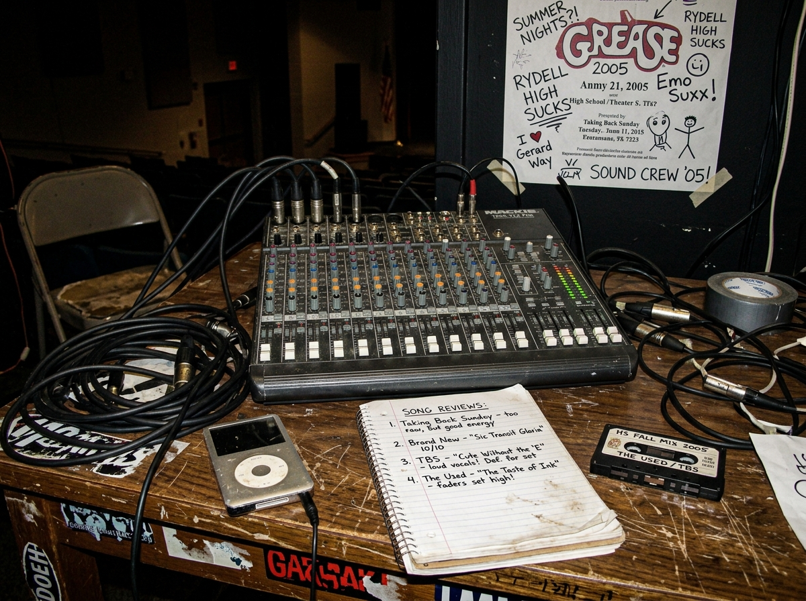
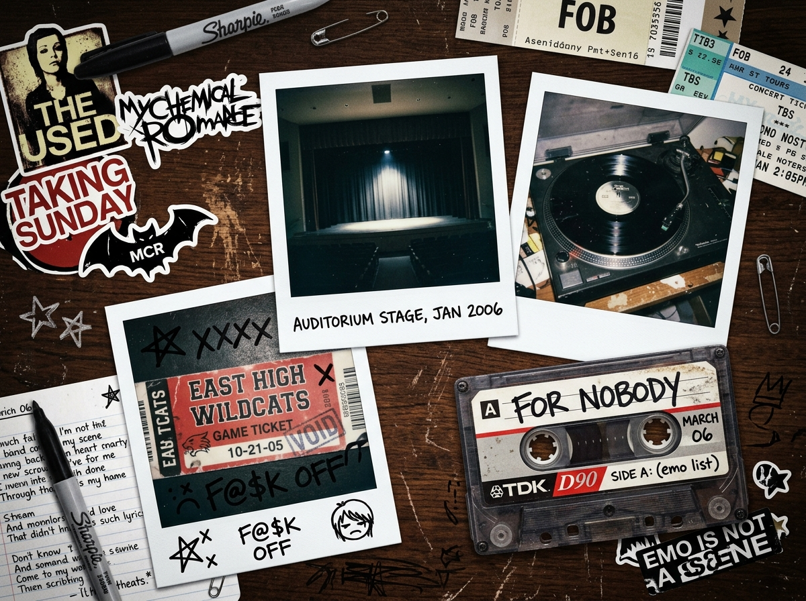
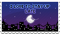
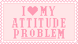
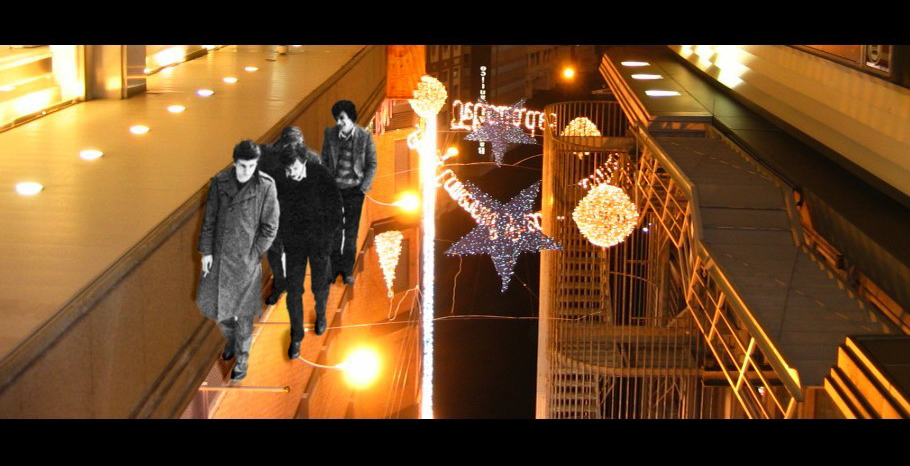
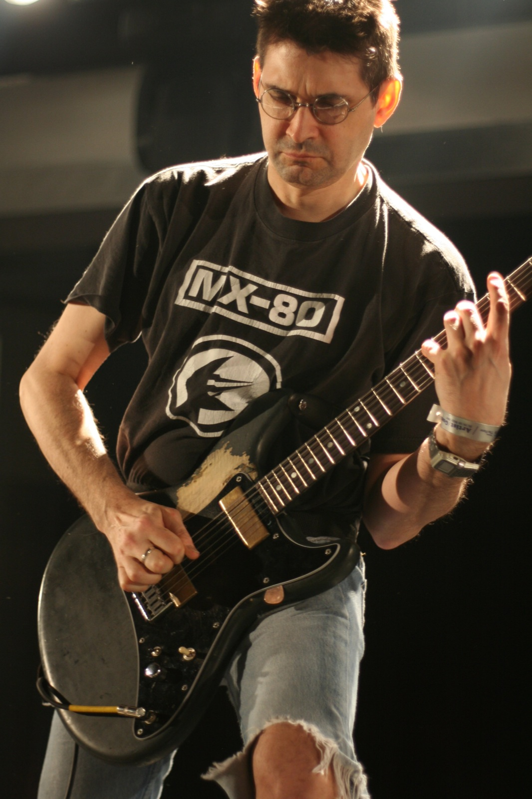
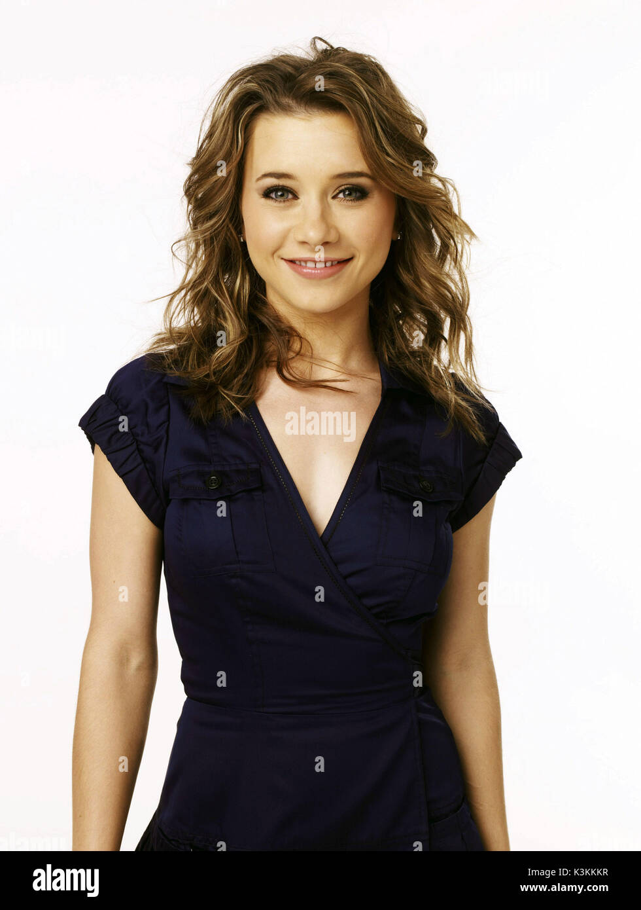
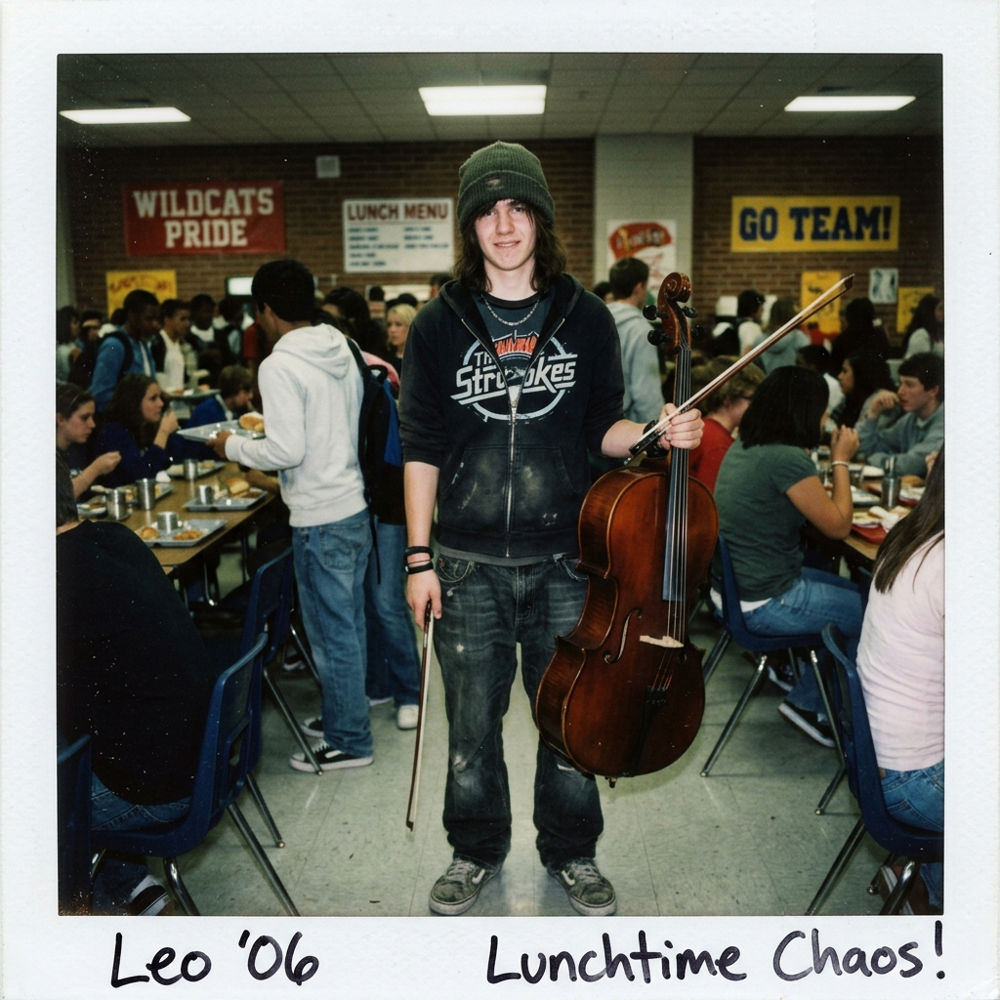
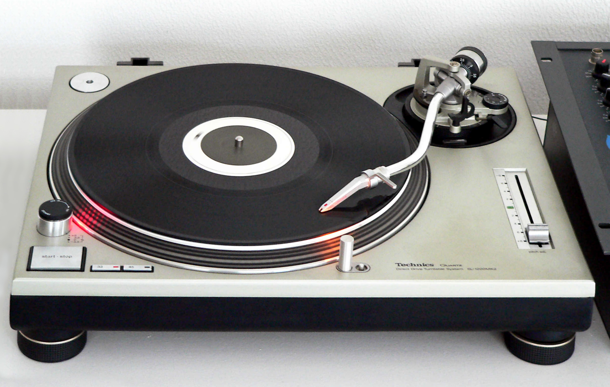
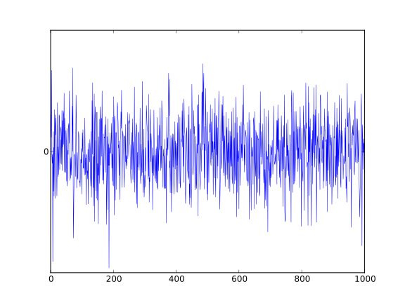

♰ MANIFIESTO DEL EXILIO EN LA CABINA DE SONIDO ♰
Permítanme aclarar una cosa: yo no formo parte de los "Wildcats". No canto sobre bandejas de almuerzo, no aplaudo en coreografías de básquetbol y definitivamente no considero que un solo de sintetizador barato con lentejuelas constituya una experiencia musical válida.
Mientras East High vive bajo el delirio colectivo de que Troy Bolton inventó el desamor por balbucear frente a un tablero de cristal, yo documento la decadencia acústica de esta institución desde la consola de mezcla. Si buscas a alguien que te diga que *High School Musical* tiene "buenas canciones de verano", habla con Chad. Aquí solo se rinde culto a la microtonalidad y a la honestidad del ruido analógico.
Registros visuales capturados con mi cámara digital de 3.2 megapíxeles con flash directo. Evidencia gráfica de mi supervivencia en East High.


[+] COSAS QUE JADEN TOLERA
- El silencio absoluto del auditorio a las 6:30 PM
- Compases irregulares en 7/8 y 11/8
- El olor a cartón de vinilos usados de segunda mano
- Las progresiones en menor de Kelsi cuando está sola
- El chico del chelo que patina (único con cerebro)
- Suéteres a rayas gastados con orificios en los pulgares
- Piratear audio sin pérdida en la sala de computación
[-] CRÍMENES CONTRA LA HUMANIDAD
- Los giros de pelo de Troy Bolton en la cancha
- Gente que aplaude en los tiempos 1 y 3 en vez de 2 y 4
- Los solos de pandereta con purpurina de Ryan Evans
- La pizza grasosa de la cafetería escolar
- Pep rallies (violación acústica a la Convención de Ginebra)
- Canciones con autotune emitidas por altavoces de gimnasio
- El optimismo corporativo no fundamentado







| Canción & Portada | Puntaje RYM | Reseña Crítica de Jaden |
|---|---|---|
|
BOP
TOP "Bop to the Top"
Sharpay & Ryan Evans
Audiciones Musical
|
0.5 / 5.0
[Bomba]
|
«Un insulto descarado a la síncopa cubana y a la tradición del mambo. Sharpay canta como si intentara quebrar cristales con decibelios de histeria y Ryan baila con la motricidad de un juguete a cuerda de club de campo. Tuve que recortar 14dB en los agudos de la consola para evitar hemorragias en el público.»
|
|
HEAD
GAME "Get'cha Head in the Game"
Troy Bolton & Wildcats
Sesión en el Gimnasio
|
1.0 / 5.0
[Infrasónico]
|
«Intentaron plagiar la 'Música Concreta' de Pierre Schaeffer usando rechinidos de tenis de básquetbol sobre piso barnizado. La respiración entrecortada de Bolton evidencia hipoxia atlética. La lírica es de una pobreza existencial dolorosa: ¿por qué tu corazón siente que salta? Claramente arritmia por exceso de Gatorade.»
|
|
BREAK
FREE "Breaking Free"
Troy & Gabriella
Callbacks Finales
|
2.5 / 5.0
[Mediocre]
|
«Fórmula comercial de laboratorio para conmover a masas incultas... Sin embargo, la resolución armónica de Kelsi al pasar al puente modula con una finura que supera por mucho las capacidades de los dos cantantes. Odio admitir que el estribillo se queda clavado en el lóbulo parietal durante semanas.»
|
|
KELSI
DEMO "Piano Soliloquy in Dm"
Kelsi Nielsen
Copia en Casete #04
|
4.5 / 5.0
[Magnum Opus]
|
«Grabada a escondidas con mi micrófono de cañón desde el andamio del techo cuando el auditorio quedó a oscuras. Influencias sutiles de Erik Satie y post-rock instrumental. Si Kelsi dejara de componerle baladas a rubias consentidas y formara un proyecto emo conmigo, este colegio tendría redención.»
|







Eres el sitio #042 en este anillo de la web profunda de 2007